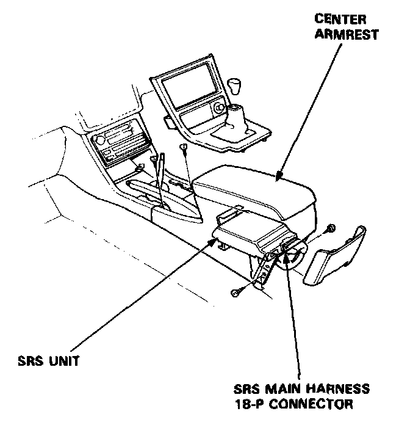
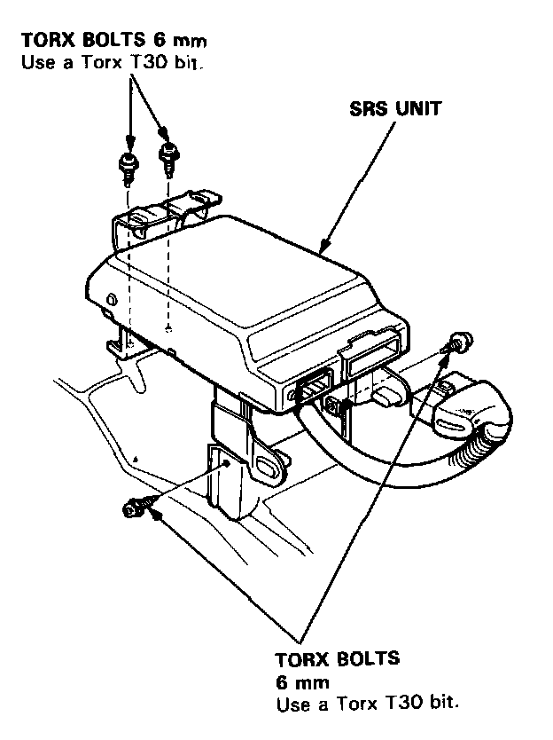
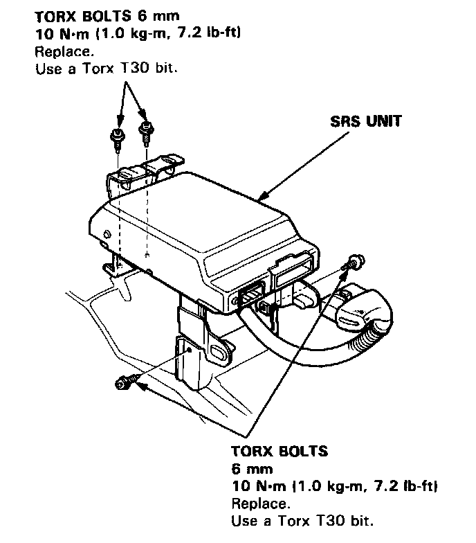
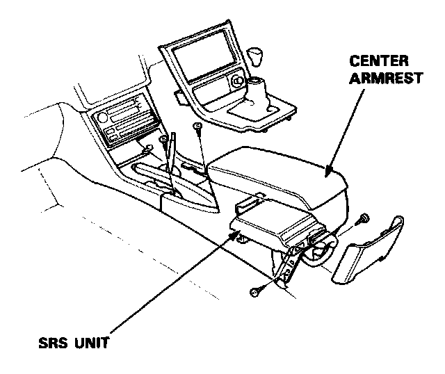

Air Bag Control Module: Service and Repair
SRS Unit Replacement
CAUTION
- Before disconnecting any part of the SRS wire harness, install the short connectors on the airbags and seat belt pretensioners.
- Do not damage the SRS unit terminals or connectors.
- Do not disassemble the SRS unit: it has no serviceable parts.
- Store the SRS unit in a clean, dry area.
- Do not use any SRS unit which has been subjected to water damage or shows signs of being dropped or improperly handled. such as dents cracks or deformation
NOTE: The original radio has a coded theft protection circuit. Be sure to get the code number before disconnecting the battery cables.
1. Disconnect the battery negative cable, then the positive cable.
2. Before disconnecting any part of the SRS wire harness, connect the short connectors - refer to the "Short Connector Installation" procedure.
3. Remove the center armrest, then disconnect the SRS main harness 18-P connector from the SRS unit.

4. Remove the four SRS unit Torx bolts, then remove the SRS unit.

CAUTION: Be sure to install the SRS wiring so that it is not pinched or interfering with other car parts.
5. Install the new SRS unit.

6. Connect the SRS main harness 18-P connector to the SRS unit, push it into position until it clicks.
7. Install the center armrest.

8. Remove the short connectors from the front passenger's airbag connector and from the SRS main harness connector.
9. Reconnect the front passenger's airbag 3-P connector to the SRS main harness connector.
10. Remove the short connectors from the driver's air-bag connector and from the cable reel 3-P connector.
11. Reconnect the driver's airbag 3-P connector to the cable reel 3-P connector. Attach the short connector (RED) to the access panel, then reinstall the panel on the steering wheel.
12. Remove the short connectors (RED) from the seat belt pretensioners, then attach them to their holders.
13. Reconnect the left side wire harness 3-P connector to the driver's seat belt pretensioner and the main wire harness 3-P connector to the front passenger's seat belt pretensioner.
14. Reinstall the quarter trim panel.
15. Reconnect the battery positive cable, then the negative cable.
16. After installing the SRS unit, confirm proper system operation: Turn the ignition ON (II); The instrument panel SRS indicator light should go on for about six seconds and then 90 off.
17. Enter the customer's code number to restore radio operation.